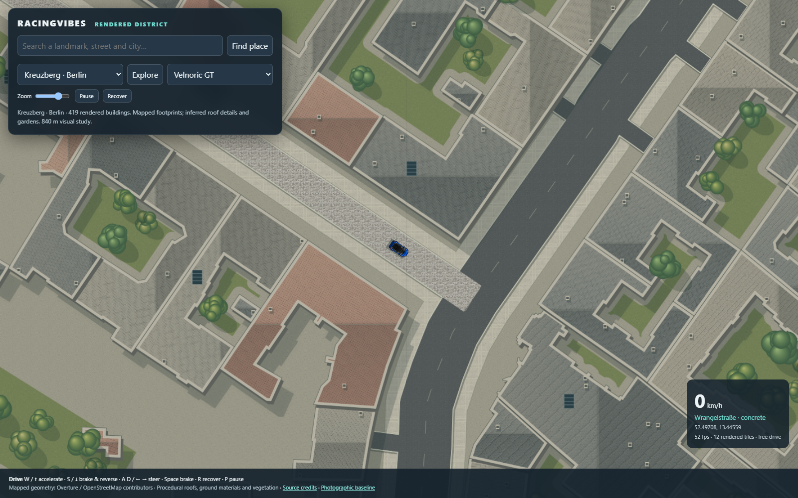
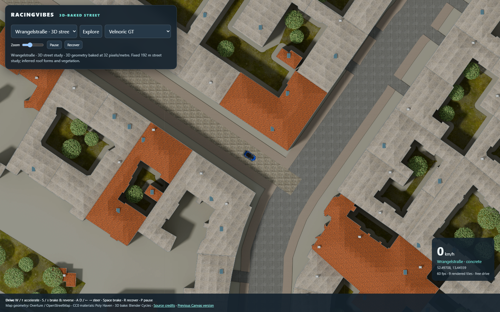

Earth Lab · 3D-baked street study
Play the new street sample · Previous Canvas version · Details and accuracy limits
The same mapped area and driving camera, using a Blender Cycles render instead of procedural Canvas artwork. Six photographic material sets have colour, normal and roughness maps. This is a fixed 192 m sample at 32 pixels per metre, with baked lighting. Roof profiles, fittings and vegetation are inferred; this is not surveyed architectural reproduction or proof of BeamNG-level quality.
Normal driving view
Previous Canvas renderer

New 3D-baked environment

Matching close camera
Previous

Material assets: Poly Haven, CC0. Powered by Poly Haven. Geometry: Overture Maps / OpenStreetMap contributors and upstream sources. Physics and vehicles: RacingVibes. The source street model is built from data; images are not AI-generated.